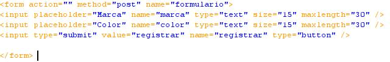

if(isset($_POST['registrar']))
{
if(isset($_POST['marca']) && !empty($_POST['marca']))
{
$marca = $_POST['marca'];
$color = $_POST['color'];
mysql_query("insert into bicis(marca, color)
VALUES('$marca', '$color')", $conexion) or die(mysql_error());
echo "Bici añadida con éxito";
}
else
{
echo "Error, introduce los datos a añadir";
}
}

$consulta = mysql_query( "SELECT * FROM usuarios", $conexion) or die(mysql_error());
while($filas = mysql_fetch_array($consulta))
{
$IDu=$filas['idusuario'];
$user=$filas['usuario'];
$pass=$filas['password'];
if(isset($_POST['eliminar']))
{
mysql_query("DELETE FROM usuarios
WHERE idusuario = '$IDu'", $conexion) or die(mysql_error());
header('refresh: 1; url=eliminar.php');
echo "ELIMINACION REALIZADA CON EXITO
";
}
$consulta = mysql_query( "SELECT * FROM bicis", $conexion) or die(mysql_error());